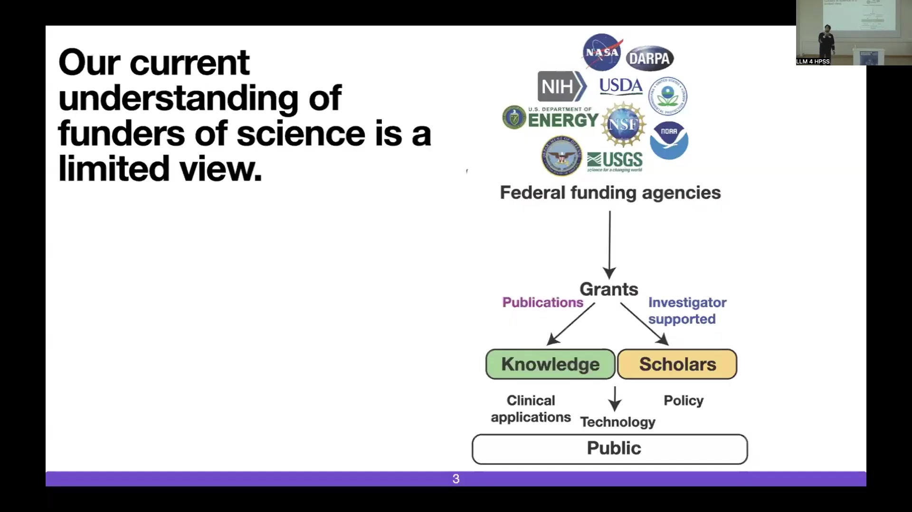
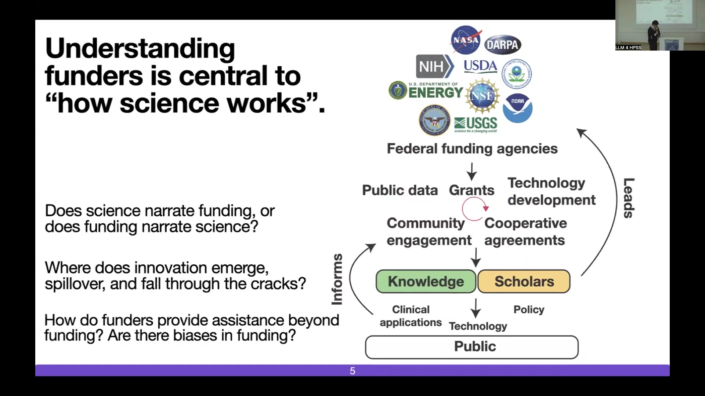
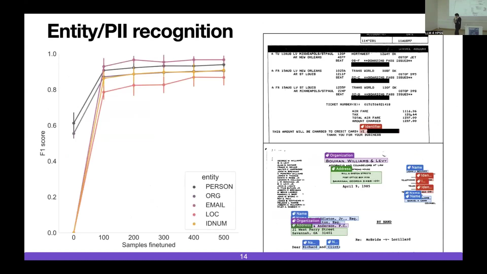

18 LLM for HPS Studies: Analyzing the NHGRI Archive
The presentation addresses the limited understanding of science funding processes, which often relies solely on public outputs like publications and grants. It proposes analyzing born-physical archives of funding agencies to gain insights into the internal processes of science funding and innovation. The case study focuses on the archive of the National Human Genome Research Institute (NHGRI), a key funder of the Human Genome Project and subsequent genomics initiatives. The NHGRI archive …
19 LLM for HPS Studies: Analyzing the NHGRI Archive
19.1 Overview
The presentation addresses the limited understanding of science funding processes, which often relies solely on public outputs like publications and grants. It proposes analyzing born-physical archives of funding agencies to gain insights into the internal processes of science funding and innovation.
The case study focuses on the archive of the National Human Genome Research Institute (NHGRI), a key funder of the Human Genome Project and subsequent genomics initiatives. The NHGRI archive contains over 2 million pages of diverse internal documents, including meeting notes, handwritten correspondence, presentations, spreadsheets, newspapers, forms, proposals, and emails. This archive presents challenges due to its scale, complexity, and the presence of sensitive information like PII and handwriting.
The research employs a suite of computational methods and tools to process this archive. These include training a synthetic-data informed handwriting model for removal and recognition, utilizing multimodal models (vision, text, layout) for tasks like entity extraction and synthetic data generation, and implementing entity disambiguation and PII masking techniques.
The extracted data is used for various analyses, including reconstructing correspondence networks and computationally modeling funding decisions.
Key findings include the identification of informal leadership structures within NHGRI, such as a “kitchen cabinet” during the International HapMap Project, discovered through unsupervised network community detection. Analysis of brokerage roles reveals differences in communication patterns between formal and informal groups.
A computational model predicting organism sequencing funding decisions demonstrates that biological, project, reputation, and linguistic features are all informative. This highlights effects like the Matthew effect, where higher H-index and community size correlate with funding success.
The work underscores the importance of preserving born-physical archives and developing computational tools to make their content accessible and analyzable for historical and sociological research on science. The project is part of a larger consortium, “Born Physical, Studied Digitally,” which seeks collaborators to apply these methods to other archives, including federal court records and seismology data.
The research aims to inform policy, increase data accessibility, and answer fundamental questions about how science works, particularly regarding the influence of funding and the emergence of innovation.
19.2 Limitations of Current Understanding of Science Funding

The current understanding of science funders is limited, primarily focusing on public outputs. Since World War II, state-sponsored research has been the dominant model, based on a social contract where funders, acting on behalf of the public, invest in research with the expectation that it will translate into informing policy, clinical applications, and new technology.
This framework, analyzing public outputs such as publications and the activities of scholars, has provided insights into aspects of science, including the long-term impact of research, the size of research teams, the origins of interdisciplinary domains, and the career mobility of scientists. Bibliometric analysis of scientific articles has also contributed to this understanding.
However, the scientific article offers a skewed and incomplete view of the scientific enterprise. Relying solely on bibliometrics to define science oversimplifies its inherent complexity. A deeper understanding requires examining the processes behind scientific outputs, moving beyond the flawed picture provided by the scientific article alone.
The conventional model depicts a flow from federal funding agencies (e.g., NASA, DARPA, NIH, USDA, DOE, NSF, USGS, NOAA) providing grants, which support scholars and lead to publications. Both scholars and publications contribute to knowledge, which in turn informs clinical applications, technology, and policy, ultimately impacting the public. Research drawing on these public outputs is supported by studies such as Wang et al. (2013), Uzzi et al. (2013), Börner et al. (2003), Guimera et al. (2005), Wu et al. (2019), Liu et al. (2018), and Sinatra et al. (2016).
19.3 Research Questions and Expanded Model of Science Funding
Understanding the role of funders is central to comprehending “how science works.” This requires shifting the focus from the products of science, such as published articles, to the underlying processes.
Key research questions emerge from this perspective, including whether science drives funding decisions or if funding shapes the direction of science. The analysis also seeks to identify points within the innovation pipeline, from initial ideation to long-term impact, where innovation emerges, spills over into other areas, or fails and falls through the cracks. A significant challenge is that failed projects, which do not typically result in publications, remain largely invisible in analyses focused solely on articles. Further questions concern the nature of assistance provided by funders beyond financial support and the potential presence of biases in funding allocation.
An expanded model of science funding incorporates additional elements to capture these processes. Public data serves as an input informing grant decisions. A circular relationship exists between grants and technology development, indicating that grants lead to technology development, which can in turn influence future grants. Similarly, knowledge informs community engagement, which can feed back into the knowledge creation process. Cooperative agreements are introduced as an output from grants that also serve as an input to community engagement, highlighting collaborative mechanisms.
19.4 Case Study: The Human Genome Project and NHGRI

The Human Genome Project (HGP) serves as a key case study, recognized as the first “big science” initiative in the field of biology. This project is relevant in the context of Netpi, which examines big science in particle physics, by providing a parallel in biology. The HGP era involved the collaboration of tens of countries and thousands of researchers with the primary goal of sequencing the human genome.
The HGP is notable for several reasons. It garnered unprecedented public attention for a biology project, shifting focus from laboratory organisms like Drosophila and C. elegans to a project with direct human relevance. Its impact continues today, as most omics methods in modern biology rely on a reference genome, and the field of genomics itself largely arose from the sequencing of the human genome.
The project also pioneered new data sharing practices that are now widely adopted and marked a significant integration of computational methods with biology. The HGP was primarily led by two major organizations: the Welcome Trust in the UK and the National Human Genome Research Institute (NHGRI), which served as the US National Institutes of Health (NIH) arm specifically for the HGP. Francis Collins, who led the NIH and directed NHGRI, was a key figure in this endeavor.
19.5 NHGRI as an Innovative Funding Agency

Analysis indicates that NHGRI stands out as one of the most innovative funding agencies within the National Institutes of Health. This assessment is based on several quantitative metrics used for comparison across various NIH institutes. NHGRI consistently shows the highest performance in the share of its funded manuscripts that rank among the top 5% most cited. It also leads in the number of citations its funded research receives from patents and the total citations accumulated after ten years. Furthermore, NHGRI’s funded research scores highest on a disruption metric, which measures the extent to which subsequent publications cease citing earlier work, suggesting a shift in research trajectories.
Based on these metrics, NHGRI is consistently identified as a leader in innovation within the biomedical community. However, while these metrics demonstrate that NHGRI is innovative, they do not explain the underlying reasons or processes that contribute to this innovation. Understanding why NHGRI is innovative requires a deeper examination of its internal operations and decision-making processes.
19.6 Interdisciplinary Team and Research Goals

The research is conducted by an interdisciplinary team comprising individuals with diverse expertise, including engineers, historians, physicists, ethicists, and computer scientists. Notable members of the team include former leaders of the NIH and NHGRI, such as Francis Collins. The project involves partnerships with organizations such as the NIH National Human Genome Research Institute, NVIDIA, and the NSF.
The research pursues several key goals. It aims to understand the specific factors and processes that contributed to the rise of the field of genomics. The team also seeks to identify failure modes within research and funding processes and analyze how innovation diffuses or spills over into different areas. A central objective is to study the dynamics of interaction between scientific funding agencies and academic scholars and scientists to understand how these relationships can foster better scientific outcomes.
19.7 The NHGRI Archive: Content and Challenges

The NHGRI Archive constitutes a rich collection of content, though its structure is complex. Due to the notable historical nature of the Human Genome Project, many internal forms and documents from the 1980s, 1990s, and subsequent years were preserved.
This archive contains a variety of document types, including meeting notes detailing the daily coordination of the genome project, handwritten notes from correspondences, agendas, and conferences, as well as presentations, spreadsheets, newspaper clippings remarking on the period, forms, proposals, and printed copies of emails.
The archive is substantial in scale, exceeding 2 million pages, and continues to grow by 5% annually through ongoing digitization efforts. A significant challenge arises from the difficulty of studying this born-digital and born-physical artifact at scale using traditional methods, posing a barrier for individual researchers or even teams.
19.8 Distinction Between Internal Documents and Public Data

Internal documents within the NHGRI archive are fundamentally different from the data publicly available to scholars. Publicly accessible data primarily consists of Requests for Applications (RFAs) and publications, found in resources like PubMed and NIH RePORTER. The content of these public sources differs significantly from that found internally.
The internal documents provide detailed descriptions of the numerous large-scale genomic projects funded by NHGRI. These projects, often involving tens or hundreds of millions of dollars and thousands of researchers, were designed to create essential resources for the genomics community, thereby contributing significantly to the rise of the field.
A t-SNE plot visualizing the document space illustrates this distinction, showing distinct clusters corresponding to various genomic projects such as LSAC, modENCODE, eMERGE, ENCODE, Ethical, Legal, and Social Implications Research, NHGRI-EBI GWAS Catalog, H3Africa, International HapMap Project, Human Genome Project, and PAGE. The clusters representing RFAs and Publications are clearly separated from those representing the internal project documents, highlighting the unique nature of the archive’s content.
19.9 Methodology: Handwriting Processing

A significant methodological challenge arises from the presence of a large volume of handwriting within the NHGRI archive, a consequence of its born-physical origins. Processing handwriting with AI presents difficulties, not only in terms of technical proficiency but also ethically, due to the unknown nature of the content it may contain. To address this, a custom handwriting model is trained.
The purpose of this model is twofold: it can remove handwriting from documents, which aids in improving the accuracy of Optical Character Recognition (OCR) for the remaining printed text, and it enables the creation of a dedicated pipeline specifically for handwriting recognition. The model architecture utilized includes components resembling a U-Net architecture, as depicted in a diagram. The ethical considerations surrounding the use of AI with handwriting are further explored in a separate ethics case study.
19.10 Methodology: Multimodal Models and Synthetic Data Generation
The methodology incorporates multimodal models, drawing upon research from the document intelligence community, including work by Huang et al. (2022) and Zhang et al. (2022). These models are designed to smartly combine multiple modalities: vision (image), text, and layout. The layout modality plays a crucial role by supervising the joint embedding process and discretizing the document structure, represented internally using angle brackets and numbers.
The models typically include components such as a joint embedding space, a Masked Autoencoder Training Objective, a Text Decoder, and a Vision Decoder. This multimodal approach enables various tasks, including entity extraction, where specific pieces of information are identified and highlighted within a document. It also facilitates the generation of synthetic data, producing artificial documents or images. The synthetic data generation capability is utilized to create synthetic training datasets, which are valuable for developing and training new classifiers.
19.11 Methodology: Entity and PII Recognition and Disambiguation

A critical task involves the recognition of entities and Personally Identifiable Information (PII). The NHGRI archive is considered a “living archive” because it contains information about real individuals, including sensitive data such as credit card numbers and social security numbers. A particular challenge is that some of these individuals remain active in government and academia today. Therefore, it is essential to implement rigorous processes for removing, masking, and disambiguating individuals within this large archive.
The methods employed for entity and PII recognition demonstrate good performance, as indicated by F1 scores. Performance metrics show that F1 scores for different entity types—PERSON, ORG, EMAIL, LOC, and IDNUM—increase significantly as more samples are used for finetuning. The F1 scores for EMAIL, IDNUM, and LOC approach 1.0 with sufficient finetuning, indicating high accuracy. Visual examples show highlighted entities on documents, such as an “identifier” on a boarding pass and various entities like “Organization,” “Address,” “Name,” “Email,” “IDNUM,” and “LOC” on a letter.
19.12 Case Study: Reconstructing a Correspondence Network from Emails

One case study involves reconstructing a correspondence network within NHGRI based on the archive’s content. The data source for this analysis consists of printed scanned copies of emails. The method involves extracting entities from these scanned documents and linking them to build the network.
The analysis utilized 62,511 email conversations, which were derived from a collection of 5,414 scanned emails. In the resulting network visualization, each node represents a physical paper copy of an email from the archive.
19.13 Network Analysis: Affiliation Association
The network analysis includes associating the nodes, representing individuals or emails, with their respective affiliations. Two primary affiliation types are identified: Non-NIH Affiliation, visually represented by red nodes in the network graph, and NIH Affiliation, represented by blue nodes. These affiliations are linked to the specific organization, funding agency, or company with which individuals were associated during the Human Genome Project era.
19.14 Network Analysis: Community Detection and Informal Structures
Network analysis techniques, including community detection methods such as the stochastic block model, are applied to the reconstructed correspondence network. This analysis focuses on understanding the interactions between academia and NIH personnel. A specific case study examines emails exchanged during the International HapMap Project.
The International HapMap Project is described as another “big science” genomics initiative that followed the HGP. Unlike the HGP’s focus on sequencing, the HapMap Project concentrated on genetic variation and is significant as the basis for genome-wide association studies (GWAS). This was a large-scale project involving numerous universities and agencies, posing a challenge for the funding agency in terms of coordination and management.
The formal structure for managing such projects typically includes a steering committee with representatives from participating universities. However, the analysis computationally discovered an informal structure not previously discussed: the “Kitchen Cabinet.” This informal leadership circle met prior to the official steering committee meetings, functioning to identify and address potential problems preemptively. This “Kitchen Cabinet” was identified from the archive data using unsupervised computational methods.
19.15 Network Analysis: Brokerage Roles and Leadership Comparison

The analysis extends to comparing different leadership circles based on their brokerage roles within the network. Brokerage roles are defined by the interaction patterns of each node (individual) with others in the network. Examples of these roles include a consultant, who receives information and disseminates it back within the same group, and a gatekeeper, who receives information but does not pass it back to the originating group. Other roles include coordinator, liaison, and representative.
The analysis compares the distribution of brokerage roles among three groups: the “Kitchen Cabinet” (representing informal leadership), the Steering Committee (representing formal leadership), and the Rest of HapMap (representing other project participants). The findings indicate that the “Kitchen Cabinet” primarily functioned in a consultant role, a pattern distinct from that observed in the other leadership circles during the project. Francis Collins is specifically noted as acting in a consultant role within the “Kitchen Cabinet.” A box plot visualization illustrates the distribution of brokerage roles for these three comparison groups.
19.16 Portfolio Analysis: Modeling Funding Decisions

The research includes portfolio analysis focused on modeling funding decisions. A specific case study examines the decisions made regarding organism sequencing after the completion of the Human Genome Project. The problem involved scientists and leadership within the funding agency determining which organismal community’s genome should be sequenced next. This decision-making process required allocating limited funding among various competing proposals advocating for the sequencing of different organisms.
19.17 Computational Model for Funding Decisions: Features

A computational model is developed using machine learning to recapitulate the funding decisions made for organism sequencing projects. The model incorporates various features categorized as Biological, Project, Reputation, and Linguistic.
Biological features include the genetic distance of the proposed organism to already known sequenced model organisms and the organism’s genome size.
Project features encompass characteristics of the proposal and the proposing team, such as the team size, the time elapsed since the first submission of the proposal, the gender equity within the proposing team, whether the proposal is standalone or part of a larger initiative, and if the proposal was written internally within the agency.
Reputation features assess the standing of the individuals and community involved, including the H-index of the proposal authors, the size of the research community focused on the specific organism, the centrality rank of the proposers within the NHGRI network, and indicators of broader community support for sequencing the organism.
Linguistic features analyze the text of the proposals, examining aspects such as the level of argumentation and repetitiveness.
19.18 Computational Model Performance and Feature Informativeness

The performance of the computational model for predicting funding decisions is evaluated using ROC curves. The model demonstrates that all categories of features are informative for predicting funding success. The Biological features achieve an ROC AUC of 0.76 ± 0.05, Project features achieve 0.83 ± 0.04, Reputation features achieve 0.87 ± 0.04, and Linguistic features achieve 0.85 ± 0.04. When all features are combined, the model achieves the highest predictive performance with an ROC AUC of 0.94 ± 0.03, significantly outperforming individual feature categories and a random classifier (ROC AUC 0.5). The informativeness of these features enables further analysis to understand how they influence the funding decision models.
19.19 Feature Interpretability Analysis
Feature interpretability techniques are employed to analyze the computational model. The purpose is to understand how individual features contribute to or inform the model’s prediction of funding success. This approach relates to methods for explaining individual predictions, particularly in contexts where features may be dependent. Relevant work in this area, focusing on more accurate approximations to Shapley values for dependent features, is cited, specifically Aas, K., Jullum, M. & Løland, A. (2021) in Artificial Intelligence. A diagram visually represents features that are more likely to contribute positively to funding success prediction and those less likely to contribute positively.
19.20 Finding: Matthew Effect in Funding Decisions

Analysis using feature interpretability reveals evidence of the Matthew Effect at play in the funding decisions. The Matthew Effect is observed in two key correlations: a higher maximum H-index among the proposal authors is associated with a greater likelihood of the proposal being approved for funding, and a larger size of the research community focused on the specific organism also correlates with a higher probability of funding success.
These correlations are visualized in scatter plots. The left plot shows an upward trend between the maximum H-index on the x-axis and a measure of contribution to funding success on the y-axis. The right plot similarly shows an upward trend between the logarithm of community size on the x-axis and the contribution to funding success on the y-axis. This confirms the expectation that funding agencies, aiming to maximize downstream impact in areas like clinical applications and technology, tend to favor proposals from more established researchers (higher H-index) and larger, more active communities. The findings align with existing understanding of the Matthew effect within the context of science funding.
19.21 Synthesis and Broader Applications
The work synthesizes the approach by demonstrating the potential achieved through combining born-physical archives with computational tools. This methodology is part of a broader initiative involving multiple partners beyond NHGRI, including custodians of federal court records from the United States and the EarthScope Consortium, which manages seismogram data. The core process involves translating data from these diverse sources using robust algorithms and cyber infrastructure.
The processed data and subsequent analysis have multiple applications. They can be used to inform policy decisions, increase the accessibility of previously locked-away data, and facilitate answering complex scientific questions. A diagram illustrates this process, showing Data and Metadata sources (NHGRI, federal court records, EarthScope Consortium) feeding into Knowledge Creation steps (Page stream segmentation, Handwriting extraction, Entity disambiguation, Layout modeling), which then enable Application Use (Scientific questions, Policy decisions, Data accessibility).
19.22 Importance of Preserving Born-Physical Archives

Born-physical archives hold valuable data that is currently contained in forms such as shipping containers. These physical archives face risks of neglect and are vulnerable to damage. The research underscores the critical importance of preserving this data to ensure its availability for future generations of scholars and scientists. The work highlights the necessity of efforts dedicated to the preservation and accessibility of these historical records.
19.23 Consortium and Call for Collaboration
The project is part of a larger consortium named “Born Physical, Studied Digitally.” The consortium is actively seeking to engage testers, partners, and users to collaborate on its initiatives. A call for collaboration is extended to individuals and institutions interested in working with the consortium.
A specific note is made regarding the recent status of NHGRI, which was among the agencies proposed for dissolution in the past year. The presentation argues that NHGRI stands as one of the most innovative funding agencies in the history of science and emphasizes that the data contained within its archive holds substantial potential for answering important scientific questions.